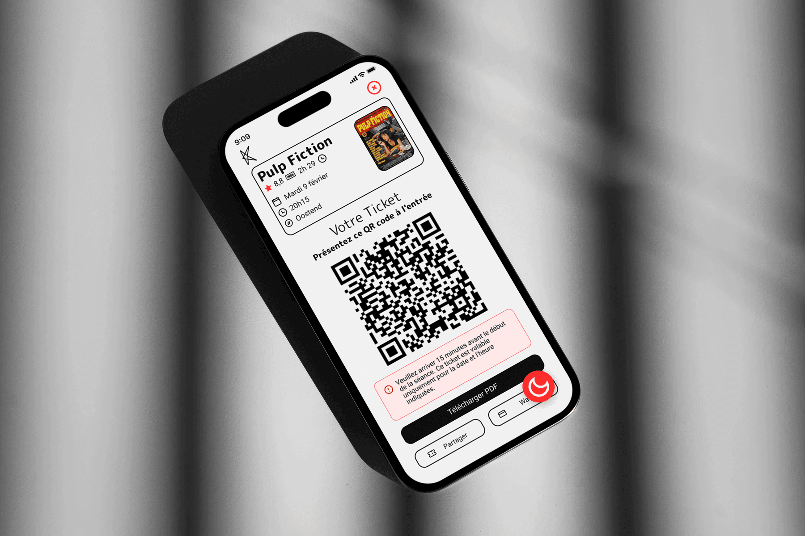
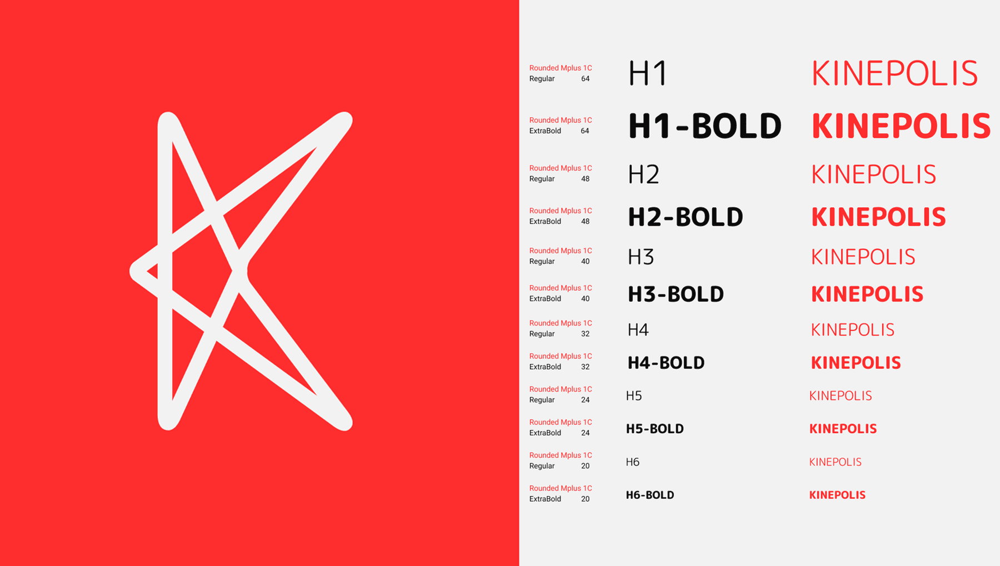
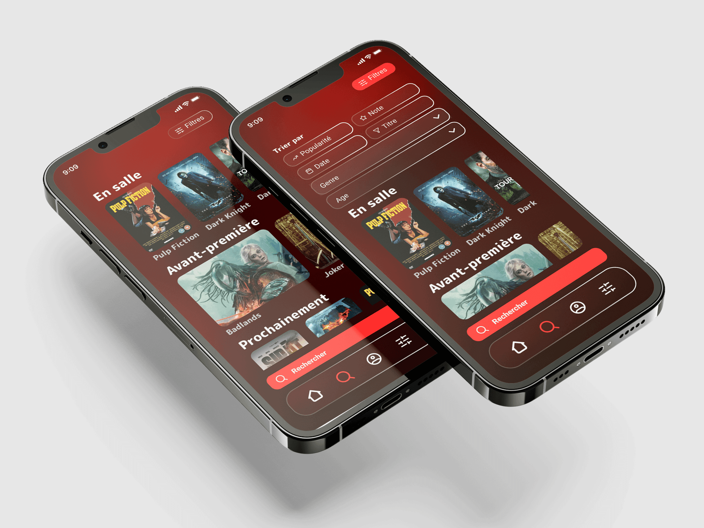
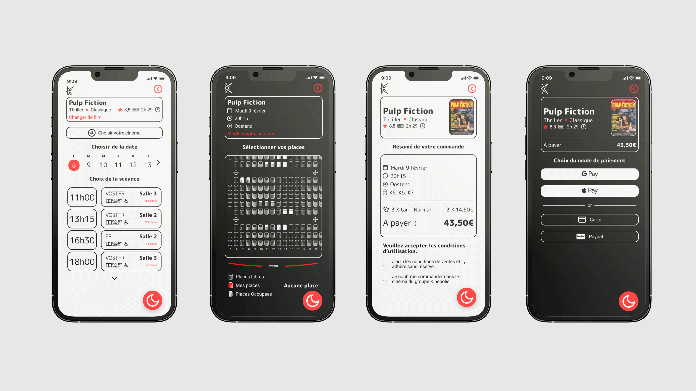
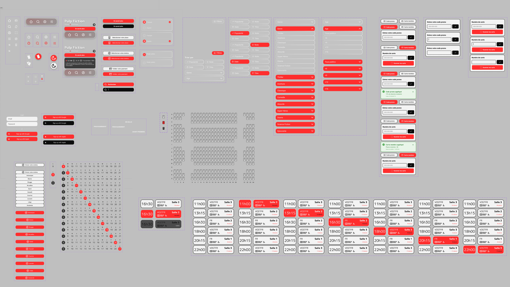

Kinepolis — le chemin le plus court vers le bon siège

Un parcours d'achat riche : film, séance, salle, siège, tarif, paiement. Autant de décisions à enchaîner avec évidence. L'idée : faire de ce tunnel une expérience mobile claire, rapide et rassurante, où chaque écran mène naturellement au suivant.
Exercice de conception UX/UI sur un cas réel : repenser l'application de commande de billets de Kinepolis. Concevoir un parcours mobile de bout en bout, de la sélection du film à la confirmation de réservation.
Designer UX/UI en charge de la conception complète — définition des flows utilisateurs, wireframes, maquettes haute-fidélité et logique d'interaction.
- Tunnel multi-étapes — film, séance, salle, siège, tarif, paiement : enchaîner ces choix avec fluidité.
- Mobile-first — concevoir pour une décision rapide, en situation, sur smartphone.
- Cohérence de marque — prolonger l'univers Kinepolis et moderniser l'expérience.
- Parcours resserré — garder les étapes qui comptent et fluidifier tout le reste.
- Hiérarchie visuelle — guider l'œil vers les infos clés à chaque écran (horaire, salle, prix).
- Feedback immédiat — confirmer chaque sélection pour rassurer tout au long du parcours.
Un parcours d'achat en étapes claires, porté par une interface mobile épurée. La sélection de siège et le tunnel de paiement ont été repensés pour porter l'utilisateur jusqu'à la confirmation, avec une lisibilité nette à chaque point de décision.



